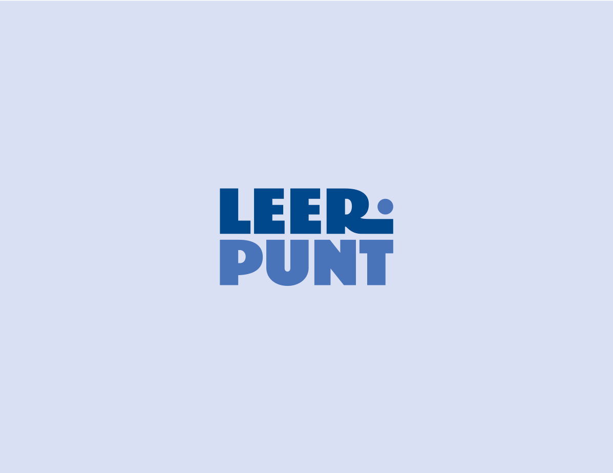
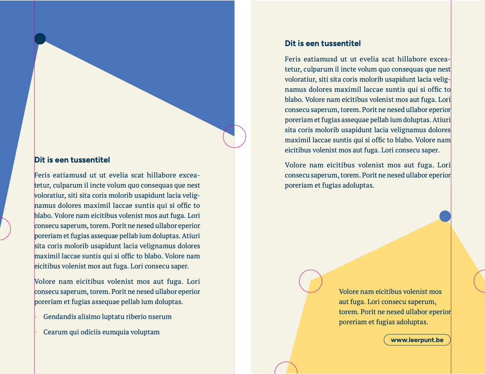
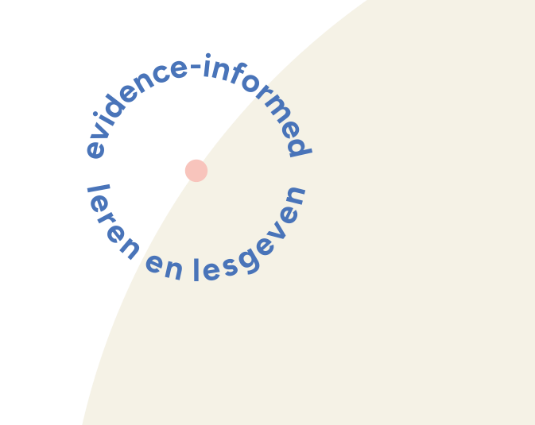
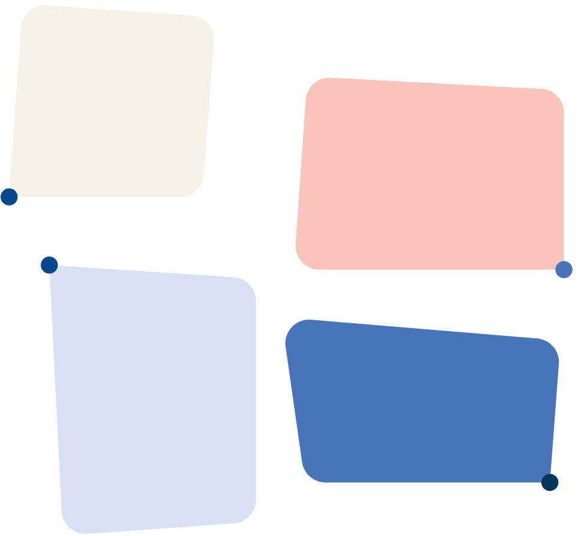
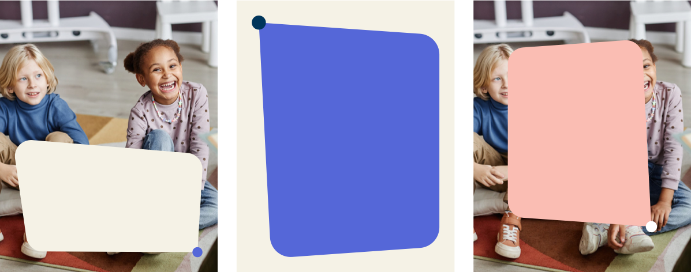
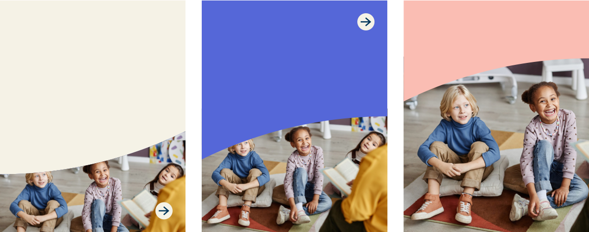
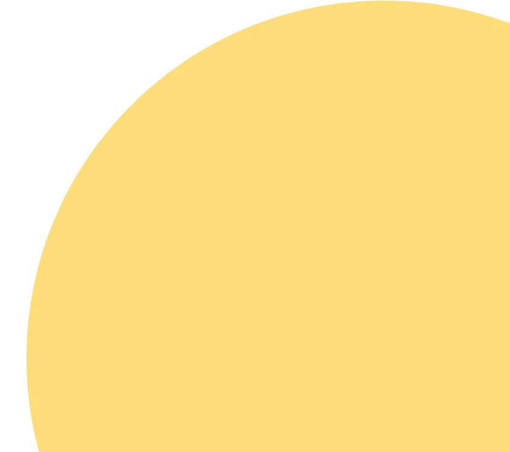

Alles begint bij de punt
De ‘punt’ uit het logo is het startpunt van elke beweging. Eerst verschijnt de punt, daarna groeit de rest eruit.
De ‘punt’ uit het logo is het startpunt van elke beweging. Eerst verschijnt de punt, daarna groeit de rest eruit.
Spotlight en tekstballon ontvouwen zich vanuit hun punt. In After Effects is de punt ook echt het ankerpunt: de vorm schaalt, draait en rekt eromheen, en de punt houdt zijn formaat.
Tekst zit altijd ín de vorm: elke tekstlayer gebruikt de vorm als alpha matte. Eerst de titel, 6 à 7 frames later de lopende tekst, telkens per woord.
Op social zit de beweging in de eerste 1,2 tot 2 seconden. Daarna staat het beeld stil, zodat de kijker kan lezen.
In de logo-animatie splitst de punt in vier kleuren uit het palet en smelt weer samen. Kleur is een actief onderdeel van de beweging, geen decor.






